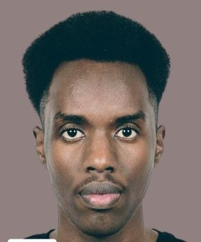

Computer Engineering Student
📞 +905066269527
📧 andyaurigiriteka@Gmail.com
📍 Karabük, Turkey
Office Automation
95%Oracle for Databases
90%C Programming
80%Object-Oriented Programming in Java
85%French: 90%
English: 90%
Turkish: 75%
Swahili: 90%
Kirundi: 100%
I am a passionate Computer Engineering student from Burundi, an East African country, dedicated to learning, growing, and contributing meaningfully to the world of technology. With a love for innovation and consistent self-improvement, I aim to make an impact through software and systems that solve world problems.
2021 - 2022 | Public Secretariat at the University Of Burundi
Printer, Writer, Bujumbura-Mairie
Assisted students at the campus with printing and writing reports.
2021 - 2022 | Education Workers Solidarity Fund (FSTE)
Internship, Bujumbura-Mairie
Helped staff of a financial organization by assisting teachers and entrepreneurs in completing missing forms for their credit applications.
2023 - Present | Computer Engineering
Karabük University, Karabük
I am in the Computer Engineering department at this University.
2018 - 2021 | Computer Science and Management
Ecole Secondaire des Techniques Administratives, Bujumbura-Mairie
A technical high school specializing in computer science and management.
2015 - 2018 | Secondary School
SMAS, Bujumbura-Mairie
A well-known school in Burundi for primary and secondary education.